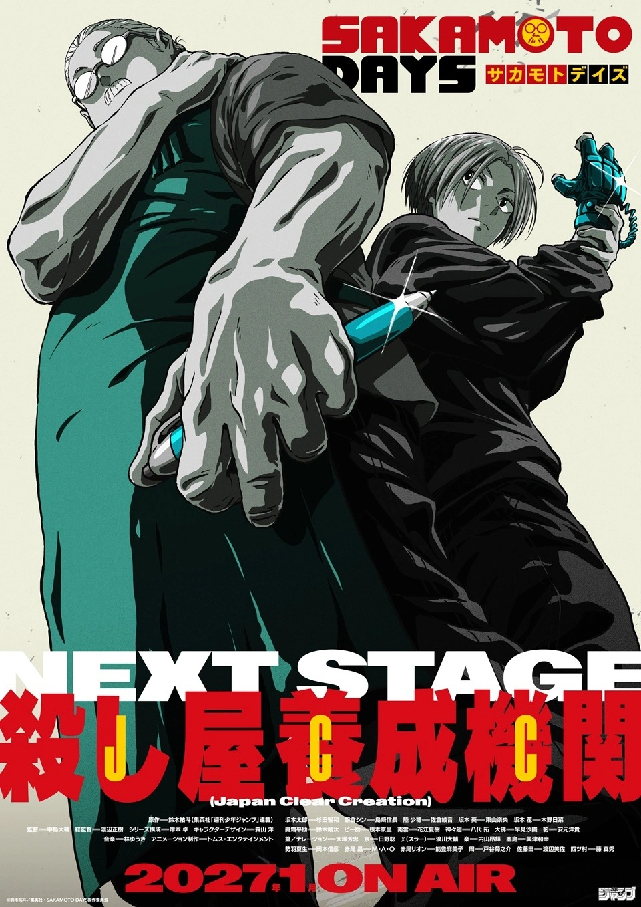

Sakamoto Days confirma su segunda temporada para enero de 2027
Sakamoto se infiltra en la academia de asesinos y regresa en enero 2027 con nuevo director al frente.

El hitman retirado vuelve a la acción. Sakamoto Days confirmó su segunda temporada con estreno programado para enero de 2027, y el anuncio llegó cargado: imagen promocional, teaser, cambio de director y tres nuevas incorporaciones al elenco para el JCC Infiltration Arc, el arco donde Sakamoto y Shin se meten directamente dentro de la academia de asesinos más peligrosa del mundo.

La nueva imagen promocional muestra a Taro Sakamoto y Shin Asakura espalda con espalda preparándose para infiltrarse en la Japan Clear Creation Academy (JCC). Sakamoto aparece con un bolígrafo como arma, asignado al azar durante un examen de ingreso, mientras Shin lleva guantes mejorados como parte de su equipamiento. El teaser muestra a Sakamoto disfrazado de su esposa Aoi mientras se infiltra en la academia como maestro suplente, y a Shin asistiendo como estudiante regular mientras recopila información en secreto. Personajes como Natsuki Seba y Akira Akao también aparecen, y el video introduce varias caras nuevas.
El elenco de voces
- Tomokazu Sugita como Taro Sakamoto. (Joseph Joestar en JoJo's Bizarre Adventure y Gojo Satoru en Jujutsu Kaisen).
- Natsuki Hanae como Shin Asakura. (Tanjiro Kamado en Kimetsu no Yaiba y Ken Kaneki en Tokyo Ghoul)./li>
Elenco confirmado anteriormente
- Kikunosuke Toya como Amane Yotsumura. (Famoso por ser la caótica voz de Denji en Chainsaw Man).
- Misa Watanabe como Etsuko Satoda. (Con una trayectoria en roles de personajes de autoridad y madurez dentro del doblaje japonés reciente).
- Shinshu Fuji como Satoru Yotsumura.
Nuevas Incorporaciones
El equipo de producción
Daisuke Nakajima, quien ha estado involucrado con la serie desde la primera temporada, asume la dirección completa para la segunda. En sus comentarios, destacó el honor de trabajar en un título de Weekly Shonen Jump con tanto seguimiento, y señaló que el objetivo del equipo es capturar la acción estilizada y las filosofías únicas de los asesinos creados por Yuto Suzuki, construyendo sobre la base establecida en la primera entrega.
Sobre Sakamoto Days
Sakamoto Days es un manga de Yuto Suzuki publicado en Weekly Shonen Jump que sigue a Taro Sakamoto, un exhitman considerado el mejor asesino del mundo que decidió retirarse después de enamorarse. Casado y con una hija, administra una tienda de conveniencia y lleva una vida tranquila que no deja de verse interrumpida por amenazas del pasado. La historia combina acción intensa con humor absurdo y una galería de personajes excéntricos que la convirtieron en uno de los títulos más queridos de Jump en los últimos años.
¿El JCC Infiltration Arc te genera más hype que el arco principal de la primera temporada, o prefieres los momentos donde Sakamoto defiende su tienda y su familia cotidiana?